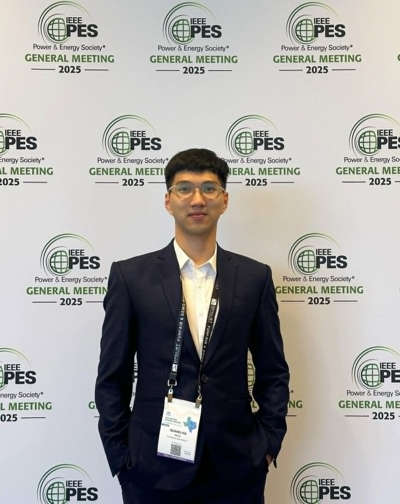

Power System Engineer, Ph.D.
Engineering at the intersection of power systems, AI, and data centers
I work on grid-scale interconnection, dynamic simulation, and protection engineering — and write about the ideas, tools, and problems I encounter along the way.
Learn more
I am a power systems engineer with a Ph.D., currently working on grid interconnection studies, inverter-based resource (IBR) modeling, and protection engineering for utility-scale projects. My day-to-day spans PSS/E dynamic simulations, BESS integration, relay settings, and harmonic analysis — mostly within the ERCOT framework.
This site is my learning journal: a place to document what I am figuring out, share useful frameworks, and connect with others working on hard problems in the energy and data infrastructure space.
Interconnection studies, dynamic simulation, voltage stability, and frequency response using PSS/E and PSCAD.
Grid-forming and grid-following inverter modeling, MQT compliance testing, and LVRT/HVRT analysis for utility-scale storage.
CMPLDW2 / CMPLDWBLU composite load parameterization, PERC1 electronic load models, and large-load interconnection studies.
Relay settings for transformer and feeder protection (SEL-751, SEL-351, SEL-487E), coordination studies, and IBR-specific challenges.
Python scripting for PSS/E and PSCAD automation, harmonic study workflows, and data processing pipelines.
Exploring applications of AI tools and machine learning in power system analysis, forecasting, and engineering workflows.
Open to conversations about power systems, grid-scale projects, research collaborations, or just swapping notes on interesting engineering problems.